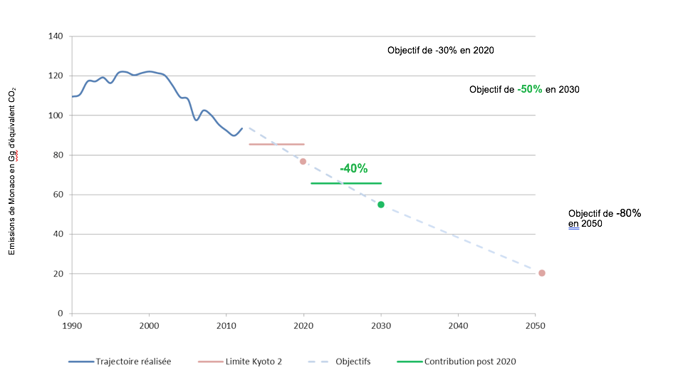

29 juillet 2015
Le présent document constitue la « Contribution prévue déterminée au niveau national » de la Principauté de Monaco, au titre de la Convention-cadre des Nations Unies sur les changements climatiques dans la perspective de l’adoption, au terme de la 21ème Conférence des Parties (décembre 2015), d’un accord juridiquement contraignant, applicable à l’ensemble des Parties à la Convention.
La Principauté de Monaco est une cité-Etat de 203 hectares, dont l’économie, diversifiée, est principalement basée sur les services, la construction, le tourisme et le secteur bancaire. Elle est enclavée dans le territoire français, à 10 kilomètres de l’Italie.
La topographie de la Principauté forme un cirque montagneux plongeant dans la mer méditerranée. La totalité de son territoire est urbanisée et forme le centre d’une agglomération économique à laquelle contribuent des villes frontalières françaises.
La population résidente s’établit à 37.000 personnes tandis que les frontaliers venant travailler quotidiennement atteignent le nombre de 40.000.
Dès Son avènement en 2005, S.A.S. le Prince Albert II a fait de la protection de l’environnement un axe prioritaire de la politique conduite par Son Gouvernement, tant sur le plan national qu’international.
La Principauté de Monaco a ratifié la Convention-cadre des Nations Unies sur les changements climatiques (CCNUCC) le 20 novembre 1992 et le Protocole de Kyoto le 27 février 2006.
Inscrite à l’annexe 1 de la Convention avec un engagement de réduction de 8% par rapport à 1990 dans le cadre de la première période du Protocole de Kyoto, la Principauté a rempli ses obligations en réduisant ses émissions de 13,18% par rapport à 19901.
Monaco a poursuivi son engagement en acceptant, le 27 décembre 2013, les amendements de Doha. L’objectif de Monaco pour la deuxième période du protocole de Kyoto est de 22% de réduction d’émissions en moyenne sur la période 2013-2020.
A l’occasion du Sommet sur le Climat, convoqué à l’initiative du Secrétaire Général des Nations Unies, le 23 septembre 2014, S.A.S. le Prince Albert II a rappelé l’objectif que la Principauté de Monaco s’est fixé de réduire ses émissions de gaz à effet de serre de 30% en 2020 et de 80% en 2050 par rapport à l’année de référence, tout en atteignant la neutralité carbone à cette date.
Consciente du caractère éminemment collectif de l’enjeu de réduction des émissions, la Principauté de Monaco souhaite apporter sa pleine contribution à l’effort commun. Elle formule le souhait que l’engagement de toutes les Parties permette d’atteindre l’objectif consistant à contenir l’élévation moyenne des températures globales à moins de deux degrés par rapport aux niveaux préindustriels et dans la mesure du possible à moins de 1,5°C.
En vue de l’adoption d’un accord juridiquement contraignant à Paris, en décembre 2015, la Principauté de Monaco souhaite contribuer à l’effort collectif en adoptant un objectif de réduction de 50% de ses émissions en 2030 par rapport à l’année de référence 19902.
La Principauté de Monaco envisage que cet engagement soit soumis à un formalisme analogue à celui qui a prévalu dans le cadre du Protocole de Kyoto.
Ainsi, elle propose que son engagement soit transformé en objectif quantitatif, qui pourrait être envisagé sur une période de 10 ans ou sur deux périodes successives de 5 ans.
Option 1 : Période d’engagement de 10 ans.
|
Engagement chiffré de limitation ou de réduction des émissions sur la période (en pourcentage des émissions de l’année de référence) |
Annonce de l’objectif de réduction des émissions de gaz à effet de serre pour l’année 2030 en pourcentage des émissions de l’année de référence. |
|
|
Période 2021-2030 |
60% (soit -40%) |
-50% |
Option 2 : Deux périodes successives de 5 ans.
|
Engagement chiffré de limitation ou de réduction des émissions sur la période (en pourcentage des émissions de l’année de référence) |
Annonce de l’objectif de réduction des émissions de gaz à effet de serre pour l’année 2030 en pourcentage des émissions de l’année de référence. |
|
|
Période 2021- 2025 |
65% (soit -35%) |
-40% |
|
Période 2026 – 2030 |
55% (soit -45%) |
-50% |
|
Type d’information |
Engagement de Monaco |
|
Description de la contribution |
Engagement de réduction chiffré sur le modèle des deux précédentes périodes de Kyoto. |
|
Couverture en terme de : a) secteur b) gaz à effet de serre c) pourcentage des émissions nationales couvertes par la cible |
L’ensemble des secteurs est couvert (voir précisions sur les forêts). L’ensemble des sept gaz de Kyoto sera couvert. 100% des émissions de l’inventaire national sont couverts. |
|
Année de référence |
L’année de référence est 1990 pour le CO2, CH4 et le N2O. Pour les gaz fluorés (NF3 compris), l’année de référence est 1995. |
|
Prise en compte du secteur de la forêt |
Étant donné son caractère entièrement urbanisé, la Principauté considèrera l’ensemble de ses espaces verts dans la catégorie « parcs et jardins » et ne reportera pas d’émission sous le secteur de la foresterie. |
|
Méthodologies d’inventaire et PRG3 utilisés |
Directives du GIEC de 2006, PRG issus du 4ème rapport du GIEC. |
|
Utilisation des mécanismes de transfert international d’unités de réduction de gaz à effet de serre. |
La Principauté de Monaco entend atteindre son objectif de réduction d’émissions par la mise en œuvre de mesures domestiques. Elle n’exclut pas toutefois l’utilisation de mécanismes de transfert internationaux d’unités de réduction d’émissions au cas où les réductions d’émissions domestiques s’avéreraient insuffisantes en fin de période d’engagement. |

Figure 1 : Représentation graphique de l’objectif de réduction de la Principauté de Monaco dans l’hypothèse d’une période d’engagement de 10 ans.
Figure 2 : Représentation graphique de l’objectif de réduction de la Principauté de Monaco dans l’hypothèse de deux périodes d’engagement de 5 ans.
La Principauté de Monaco entend atteindre son objectif de réduction d’émissions par la mise en œuvre de mesures domestiques. Elle n’exclut toutefois pas l’utilisation de mécanismes de transfert internationaux d’unités de réduction d’émissions au cas où les réductions d’émissions domestiques s’avéreraient insuffisantes en fin de période d’engagement.
Ainsi, le niveau de l’engagement quantitatif proposé suppose la disponibilité de mécanismes de transfert internationaux d’unités de réduction d’émissions.
A ce titre, la Principauté de Monaco soutient l’adoption de règles permettant d’assurer le caractère réel, additionnel, permanent et vérifiable des réductions d’émissions nettes ou des émissions évitées à l’origine d’unités transférables. Elle s’engage à utiliser exclusivement des unités offrant ce type de garantie.
La Principauté de Monaco est, par ailleurs, en faveur d’un usage limité des mécanismes internationaux de transfert d’unités dans le cadre de l’atteinte des objectifs des Parties.
Les principaux secteurs d’émission de la Principauté de Monaco sont le transport routier, la valorisation énergétique des déchets et le chauffage-climatisation des bâtiments. Ces trois postes comptent chacun pour près de 30% des émissions de Monaco. L’ajout des émissions liées aux gaz fluorés permet d’atteindre plus de 98% des émissions de la Principauté de Monaco.
La Principauté de Monaco a défini un plan d’action prenant en compte ce profil d’émission et accordant une priorité aux actions qui concernent les postes les plus importants.
Concernant le transport routier, la Principauté de Monaco mène depuis plus de 20 ans une politique de mobilité comprenant les axes suivants :
La Principauté compte accentuer sa politique de réduction d’émissions grâce à des mesures équilibrées sur chacun des trois axes. La part modale piétonne parmi les déplacements intra- urbains dépasse déjà les 50%. La politique de développement des liaisons mécanisées doit permettre de renforcer les réflexes de déplacement pédestre. La mise en œuvre d’un transport en commun en site propre desservant longitudinalement la Principauté est à l’étude, et devrait favoriser les déplacements couplés entre les modes de transports en commun et la marche.
Le parc automobile de la Principauté de Monaco est constitué à ce jour de 2.57% de véhicules électriques et hybrides. Une croissance très rapide des ventes de véhicules hybrides et électriques a été enregistrée en début d’année 2015. Ce résultat est lié à la disponibilité de nouveaux modèles plus attractifs et à une politique incitative menée par le Gouvernement Princier.
La mise en œuvre de cette politique incitative sera poursuivie et adaptée dans les prochaines années afin que le transport routier participe à l’atteinte de l’objectif de réduction d’émissions nationales de la Principauté.
Dans le domaine de la valorisation énergétique des déchets, la Principauté de Monaco dispose depuis 1982 d’une usine de tri-génération qui sera prochainement remplacée. La réduction des émissions liée à ce poste d’émission, et plus largement, au mode gestion des déchets, constitue un axe prioritaire du Gouvernement.
Les réflexions entreprises concernent à la fois les installations techniques de traitement et la définition d’un nouveau mode de gestion. Dans ce domaine, les choix techniques devraient conditionner les émissions pour les 30 ans à venir. Le Gouvernement a entrepris plusieurs études à ce sujet, dont certaines sont encore en cours.
Les émissions liées au bâtiment constituent le troisième poste d’émission majeur de la Principauté de Monaco. Des démarches variées de réduction d’émissions dans la construction neuve ou dans le bâti ancien ont été menées et renforcées ces dernières années.
Grâce à une appropriation ancienne, la Principauté de Monaco dispose par ailleurs d’un taux d’équipement en pompes à chaleur en eau de mer très élevé qui représente un atout énergétique non négligeable. Pour autant, ce secteur constitue un potentiel d’atténuation des émissions et d’efficacité énergétique important dans le bâti existant.
Dans le cadre de la poursuite de ses objectifs de réduction d’émissions et de communication de son engagement post 2020, la Principauté de Monaco a décidé d’entreprendre la définition d’une stratégie d’atténuation dans le domaine bâti visant l’ensemble de son territoire.
Cette stratégie fera appel à des actions de performance et de substitution énergétique. Elle doit aboutir à la définition d’un plan directeur des énergies qui abordera les filières d’approvisionnement, les vecteurs énergétiques et les productions locales dans l’optique, à terme, d’une neutralité carbone.
Des relevés météorologiques et climatiques existent à Monaco depuis 1911. L’analyse des données sur la plus longue période cohérente disponible a permis de remonter jusqu’en 1969 et a montré une tendance à l’élévation progressive de la température annuelle. Cette tendance correspond à une hausse de température de 1,5° sur une période de 45 ans.
De manière beaucoup plus récente, les études relatives aux impacts des changements climatiques ont commencé en 2013 par l’analyse des tendances climatiques locales (projections) ainsi qu’une étude portant spécifiquement, d’une part, sur la période d’activité des moustiques (aedes albopictus) et, d’autre part, l’évolution des degrés jours unifiés de chauffage et de climatisation.
Une étude de vulnérabilités visant à la définition d’un plan d’action pour l’adaptation aux changements climatiques à l’échelle de Monaco a été initiée en 2014. Cette étude devrait s’achever fin 2015. Dans le cadre de ce travail, la Principauté a tout d’abord entrepris une démarche bibliographique de consolidation des projections climatiques à horizon proche (2021-2050) et lointain (2071-2100), dont le résultat synthétique a été envoyé à des acteurs clés du territoire dans les domaines suivants :
Le travail exhaustif d’analyse des vulnérabilités et de construction d’un plan d’action se base sur la participation de ces acteurs territoriaux.
La stratégie d’adaptation sera composée d’un plan d’action accompagné d’une démarche de suivi et d’évaluation.
L’étude des vulnérabilités aux changements climatiques a également vocation à alimenter une cartographie des risques élaborée par la force publique monégasque et prenant en compte les aléas liés aux activités humaines, autant qu’au climat et aux événements telluriques.
Dans le cadre de sa participation à la première période du Protocole de Kyoto, la Principauté de Monaco a entrepris un ensemble d’actions d’atténuation visant prioritairement les postes pour lesquels le rapport coût – efficacité était le plus favorable (substitution du fioul par du gaz, par exemple).
L’objectif de 50% de réduction d’émissions par rapport à 1990 ne permet plus de faire appel à de simples gains de performance, mais nécessite une démarche de transition énergétique dans le domaine du bâtiment et une évolution significative du traitement des déchets. Ces démarches nécessiteront le déploiement de technologies proches de la neutralité carbone dont les degrés de maturité sont variables. Ces technologies sont souvent peu répandues et coûteuses.
Ainsi, les démarches qu’envisage la Principauté de Monaco sont ambitieuses. Elles nécessiteront des investissements importants de la part de l’Etat mais impliqueront aussi les particuliers et le secteur privé qui devront s’adapter à de nouvelles réglementations.
Ces efforts doivent permettre à la Principauté d’atteindre des objectifs d’émission qui sont en adéquation avec le scénario d’émission5 du GIEC permettant de contenir l’élévation de température à moins de deux degrés Celsius, dont la trajectoire passe par des réductions de 40 à 70% en 2050, par rapport à 2010.
En adoptant un objectif allant au-delà des exigences de réduction évoquées par le GIEC à l’échelle mondiale, et en soutenant le développement des technologies de pointe, la Principauté de Monaco souhaite démontrer son plein engagement dans ce processus collectif. Ainsi, malgré une faible responsabilité dans les émissions globales, Monaco est doté de capacités lui permettant d’être précurseur dans le déploiement des modes de déplacement et de consommation énergétique innovants et non émetteurs ainsi que dans le soutien à des techniques innovantes de traitement des déchets et de développement de l’économie circulaire.
1. Rapport National d’Inventaire de la Principauté de Monaco, soumis le 3 septembre 2014 : http://unfccc.int/national_reports/annex_i_ghg_inventories/national_inventories_submissions/items/8108.php↩
2. L’année de référence est 1990 pour le CO2, CH4 et N2O. Pour les gaz fluorés (incluant le NF3) l’année de référence est 1995.↩
3. Pouvoirs de Réchauffement Globaux↩
4. Selon les termes du paragraphe 14 de la décision 1/CP.20, cette section vise à fournir des informations sur la façon dont la Principauté de Monaco « considère que sa contribution est juste et ambitieuse au regard de ses circonstances nationales et sur la manière dont [son] objectif contribuera à l’atteinte des objectifs de la Convention. »↩
5. Il s’agit du scénario RCP 2.6↩